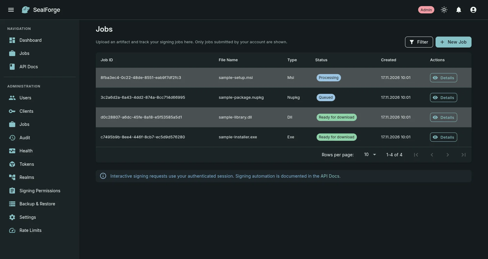

Your key stays in your token
Your private signing key stays in your token. SealForge uses that token to sign on your own infrastructure.
Meet SealForge
SealForge helps your team and build pipelines sign code on infrastructure you control. You decide who can use each certificate and follow every job from submission through verification.
Quick start
SealForge runs on your Linux host with Docker and a compatible signing token.
Use a Linux host with Docker Engine and access to your signing token.
Deploy the web application, signing worker and database on your infrastructure.
Enroll your token, grant a signing permission and submit a file.
Your private signing key stays in your token. SealForge uses that token to sign on your own infrastructure.
Give each person or pipeline permission to use a specific certificate. Administration and signing access remain separate.
Check progress and review job events. An artifact becomes available only after signing and verification succeed.
Inside SealForge
Follow signing jobs and system health from the dashboard. The images show example data.


Signing workflow
Send and follow jobs in your browser, or use the API to automate submission and result collection.
Select the signing permission for your certificate.
Upload your file to create a signing job.
SealForge checks access, signs, timestamps and verifies your file.
For API jobs, download the verified file with the same API client.
Getting started
You'll need a Linux host, a compatible signing token and a certificate. Our setup guide will help you prepare each one.
Explore the architecture, plan your team's signing workflow, or see how you can contribute to SealForge.